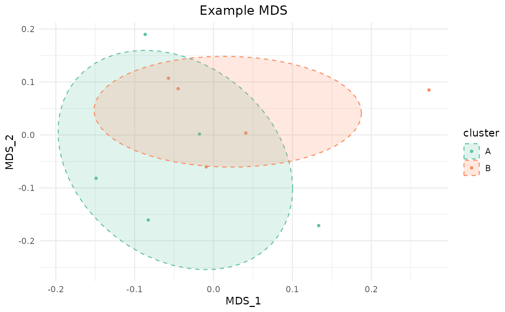

Performs classical multidimensional scaling (MDS) on a similarity or dissimilarity matrix and displays a 2D scatter plot colored by group labels, with optional confidence ellipses. This is the primary visualization for MOSAIC's per-feature sample similarity matrices and module-level subgroup structure.
Usage
plot_mds_cluster(
similarity_matrix,
title,
cluster,
size = 1,
custom_colors = NULL,
dis = FALSE,
idx1 = 1,
idx2 = 2,
add_ellipse = TRUE,
ellipse_level = 0.66
)Arguments
- similarity_matrix
A square numeric matrix of pairwise similarities or distances. By default, this is treated as a similarity matrix and converted to dissimilarity via
1 - x. Setdis = TRUEif the input is already a dissimilarity/distance matrix.- title
Character string for the plot title.
- cluster
Vector of group labels (character, factor, or numeric), one per row/column of
similarity_matrix. Used for point coloring and ellipses.- size
Numeric. Point size. Default:
1.- custom_colors
Named character vector mapping group labels to colors. Names must match the levels of
cluster. Example:c("Control" = "#56B4E9", "Disease" = "#E69F00"). IfNULL(default), theSet2palette from RColorBrewer is used.- dis
Logical. If
TRUE,similarity_matrixis treated as a dissimilarity matrix directly (no1 - xconversion). Default:FALSE.- idx1
Integer. MDS dimension to use for the x-axis. Default:
1.- idx2
Integer. MDS dimension to use for the y-axis. Default:
2.- add_ellipse
Logical. If
TRUE(default), add t-distribution confidence ellipses around each group.- ellipse_level
Numeric between 0 and 1. Confidence level for the ellipses. Default:
0.66.
See also
compute_module_similarity for generating similarity
matrices for subgroup detection.
Examples
# Create a toy similarity matrix
set.seed(42)
sim <- matrix(runif(100, 0.5, 1), 10, 10)
sim <- (sim + t(sim)) / 2 # make symmetric
diag(sim) <- 1
rownames(sim) <- colnames(sim) <- paste0("S", 1:10)
groups <- rep(c("A", "B"), each = 5)
plot_mds_cluster(sim, "Example MDS", cluster = groups)
#> Warning: minimal value for n is 3, returning requested palette with 3 different levels

# With custom colors and no ellipses
plot_mds_cluster(sim, "Custom Colors", cluster = groups,
custom_colors = c("A" = "#56B4E9", "B" = "#E69F00"),
add_ellipse = FALSE, size = 3)

if (FALSE) { # \dontrun{
# Visualize a DC feature's sample similarity
plot_mds_cluster(
dc_result$similarity_matrix_list[[feature_idx]],
title = "STAT5B Connectivity",
cluster = paste0("Day_", dc_result$group_list[[feature_idx]]),
custom_colors = c("Day_0" = "#56B4E9", "Day_7" = "#E69F00")
)
} # }